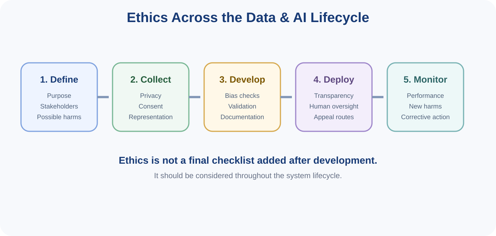
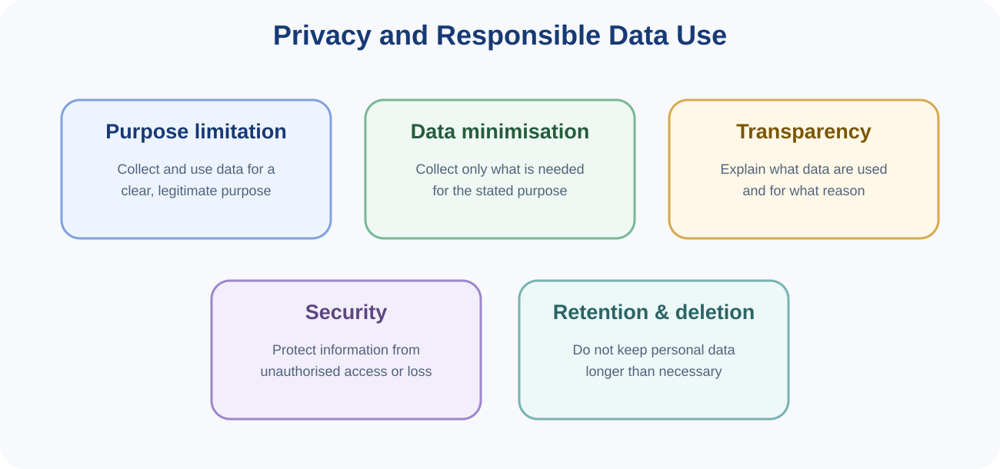
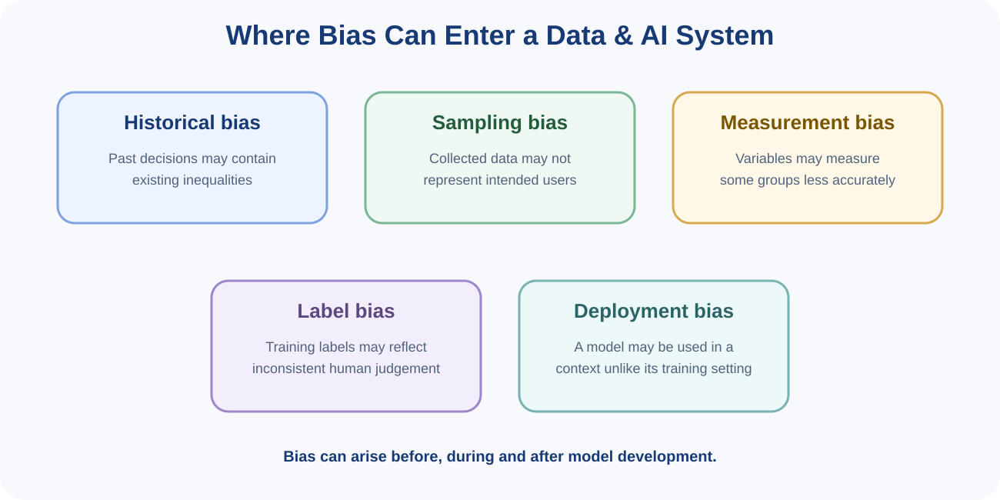
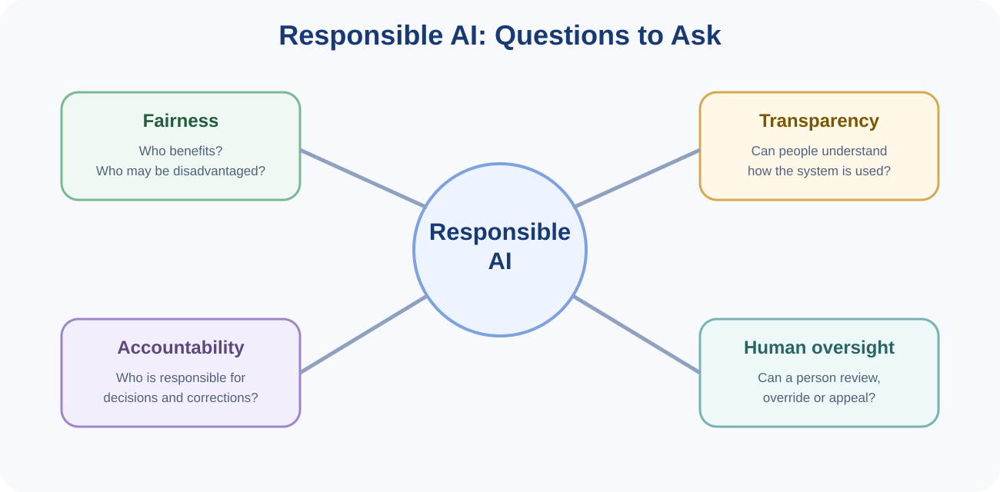

You can read these notes on screen or use the button below to print or save them as PDF.
Data Science and Artificial Intelligence can provide major benefits, but technical performance alone does not determine whether a system is appropriate. Ethical questions ask whether data and AI systems are developed and used in ways that respect people, avoid unnecessary harm, distribute benefits and risks fairly, and provide appropriate accountability.
Ethics should not be treated as a final step added after a system has already been designed. Choices made when defining the problem, collecting data, selecting variables, evaluating performance and deploying the system can all create ethical consequences.

Privacy concerns how personal information is collected, used, shared, retained and protected. Data Science projects often involve information about people, so privacy should be considered from the beginning.

Data should be collected for a clear and legitimate purpose. Reusing personal data for a substantially different purpose may require additional justification, transparency or permission.
Collect only the information reasonably needed for the intended purpose. Asking for unnecessary sensitive information increases privacy risk without improving the task.
People should receive understandable information about what data are collected, why they are used and how important decisions may affect them.
Privacy and security are related but not identical. Security protects information against unauthorised access, loss or misuse. Privacy concerns whether the collection and use of the information are appropriate in the first place.
Personal information should not be retained indefinitely without a reason. Projects should consider how long data are needed and when they should be securely deleted or de-identified.
Bias can arise when data, labels, measurements, modelling choices or deployment conditions systematically favour or disadvantage particular cases or groups. Bias is not limited to the model itself.

Historical records may reflect previous social, institutional or organisational inequalities. Training a model on those records can reproduce those patterns.
If the collected sample does not adequately represent the population where the system will be used, performance may differ substantially between groups or locations.
A variable or sensor may measure some groups more accurately than others. For example, a proxy variable may not represent the same underlying concept equally well for everyone.
Training labels can reflect inconsistent or subjective human judgement. If historical labels are unreliable, a model may learn those inconsistencies.
A model may be used for a purpose or population different from the setting for which it was developed and evaluated.
Different fairness goals can conflict. A system may have similar overall accuracy across groups but different false-positive or false-negative rates. Which differences matter most depends on the context and potential harm.
Transparency means providing appropriate information about how a system is developed and used. Explainability concerns whether people can understand the reasons or factors behind an output. The amount and type of explanation required depends on the context.
Accountability means that people or organisations remain responsible for how a system is designed, deployed and monitored. Saying “the algorithm decided” does not remove human responsibility.
For important decisions, human oversight can provide a way to review unusual cases, correct errors, consider context that the model does not capture and offer a route for appeal.

AI systems can influence institutions, employment, education, healthcare, communication, accessibility, public services and the distribution of opportunities. Societal impact includes both benefits and risks.
A responsible assessment should consider not only the intended user but also other people who may be indirectly affected.
Responsible AI refers to developing and using AI systems in ways that appropriately manage risks and support trustworthy outcomes. Practical responsible-AI work typically includes technical, organisational and human measures rather than relying on one principle alone.